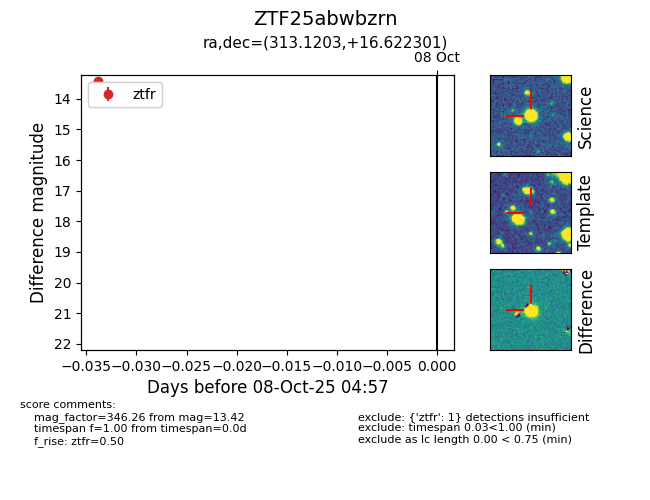

FINK: ZTF25abwbzrn
Lasair: ZTF25abwbzrn
ALeRCE: ZTF25abwbzrn
ZTF25abwbzrn (ztf,fink)
equatorial (ra, dec) = (313.1203,+16.62230)
galactic (l, b) = (62.7725,-17.41656)

last ztfr=13.42
1 ztfr detections